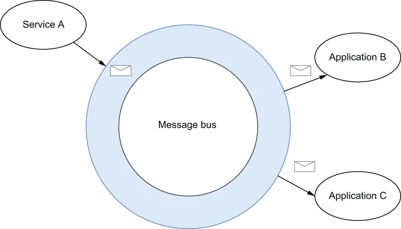
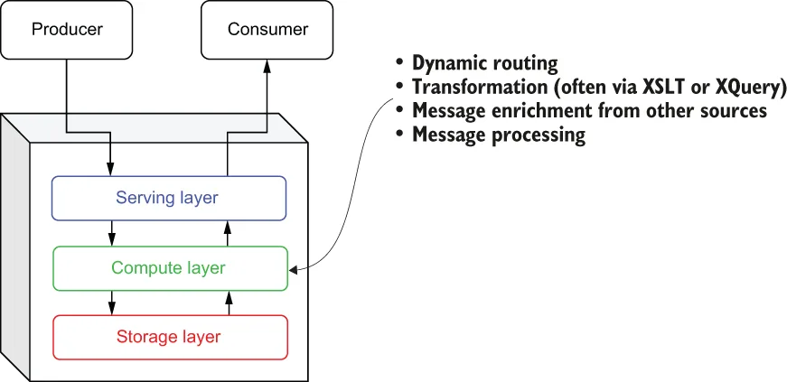
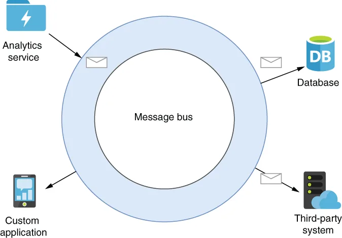

Enterprise service buses (ESB) emerged during the early part of this century when XML was the preferred message format used for implementing service-oriented architecture (SOA) applications using SOAP-based web services. The core concept of ESBs was the message bus, as shown in figure 1.8, which served as a communication channel between all applications and services. This centralized architecture is in direct contrast to the point-to-point integration previously used by other message-oriented middleware.
企业服务总线（ESB）出现在本世纪初，当时 XML 是使用基于 SOAP 的 Web 服务实现面向服务架构（SOA）应用时的首选消息格式。ESB 的核心概念是消息总线（message bus），如图 1.8 所示，它充当所有应用与服务之间的通信通道。这种集中式架构与此前其他面向消息的中间件所采用的点对点集成形成了鲜明对比。

\Figure 1.8 The core concept of ESBs is the use of a message bus in order to eliminate the need for point-to-point communication. Service A merely publishes its message to the bus, and it is automatically routed to applications B and C.
图 1.8 ESB 的核心概念是使用消息总线，从而消除对点对点通信的需求。服务 A 只需把消息发布到总线上，它就会被自动路由到应用 B 和 C。
With an ESB, each application or service would send and receive all its messages over a single communication channel, rather than having to specify the specific topic names they wanted to publish and consume from. Each application would register itself with the ESB and specify a set of rules used to identify which messages it was interested in, and the ESB would handle all of the logic necessary to dynamically route messages from the bus that matched those rules. Similarly, each service was no longer required to know the intended target(s) of its messages beforehand and could simply publish its messages to the bus and allow it to route the messages.
使用 ESB 时，每个应用或服务都通过单一的通信通道收发其全部消息，而不必指定想要发布和消费的具体主题名称。每个应用会向 ESB 注册自身，并声明一组用于识别自己感兴趣的消息的规则，而 ESB 则负责处理所有必要的逻辑，把总线上匹配这些规则的消息动态路由出去。同样地，每个服务也不再需要事先知道消息的预期目标，只需把消息发布到总线，由总线来完成路由。
Consider the scenario where you have a large XML document that contains hundreds of individual line items within a single customer order, and you want to route only a subset of those items to a service based upon some criteria within the message itself (e.g., by product category or department). An ESB provided the capability to extract those individual messages (based on the results of an XQuery) and route them to different consumers based on the content of the message itself.
设想这样一个场景：你有一个大型 XML 文档，其中包含单个客户订单里的数百个明细行项目，而你希望根据消息本身的某些条件（例如按产品类别或部门）只把其中一部分项目路由给某个服务。ESB 提供了这样的能力：提取出这些单独的消息（基于 XQuery 的查询结果），并根据消息本身的内容将它们路由给不同的消费者。
In addition to these dynamic routing capabilities, ESBs also took the first evolutionary step down the road of stream processing by emphasizing the capabilities to process the messages inside the messaging system itself, rather than having the consuming applications perform this task. Most ESBs provided message transformation services, often via XSLT or XQuery, which handled the translation of message formats between the sending and receiving services. They also provided message enrichment and processing capabilities into the message system itself, which up until that point had been performed by the applications receiving the messages. This was a fundamentally new way of thinking about messaging systems that had previously been used almost exclusively as a transportation mechanism.
除了这些动态路由能力之外，ESB 还迈出了通往流处理道路上的演化第一步：它强调在消息系统内部处理消息的能力，而不是让消费方应用来完成这项任务。大多数 ESB 通过 XSLT 或 XQuery 提供消息转换服务，负责在发送方与接收方服务之间完成消息格式的转换。它们还把消息补全与处理能力引入消息系统自身，而在此之前，这些工作一直是由接收消息的应用来完成的。这是一种关于消息系统的全新思维方式——在此之前，消息系统几乎仅仅被当作一种传输机制来使用。
One could argue that the ESB was the first category of EMS to introduce a third layer to the basic architecture of messaging systems, as shown in figure 1.9. In fact, today most modern ESBs support more advanced computing capabilities, including process choreography for managing business process flows, complex event processing for event correlation and pattern matching, and out-of-the-box implementations of several enterprise integration patterns.
可以说，ESB 是第一类为基本消息系统架构引入第三个层次的 EMS，如图 1.9 所示。事实上，当今大多数现代 ESB 都支持更高级的计算能力，包括用于管理业务流程流的流程编排、用于事件关联与模式匹配的复杂事件处理，以及若干企业集成模式的开箱即用实现。

\Figure 1.9 The ESB’s emphasis on dynamic routing and message processing represented the first time stream processing capabilities were added to a messaging system. This introduced a whole new architectural layer to the base messaging system architecture.
图 1.9 ESB 对动态路由与消息处理的重视，代表着流处理能力首次被加入消息系统。这为消息系统的基础架构引入了全新的一层。
The ESB’s other significant contribution to the evolution of the messaging system was its focus on integration with external systems, which forced messaging systems to support a wide variety of non-messaging protocols for the first time. While ESBs still fully support AMQP and other pub-sub messaging protocols, a key differentiator of ESB was its ability to move data onto and off of the bus from non-message-oriented systems, such as email, databases, and other third-party systems. In order to do this, ESBs provided software development kits (SDKs) that allowed developers to implement their own adapters to integrate with their system of choice.
ESB 对消息系统演进的另一项重要贡献，是它对与外部系统集成的关注，这迫使消息系统首次去支持多种多样的非消息协议。尽管 ESB 仍然完整支持 AMQP 以及其他发布-订阅消息协议，但 ESB 的一个关键差异化优势在于：它能够把数据从电子邮件、数据库和其他第三方系统等非面向消息的系统中送入总线，也能从总线取出。为了做到这一点，ESB 提供了软件开发工具包（SDK），允许开发者实现自己的适配器，以便与其所选的系统集成。
As you can see in figure 1.10, this allowed data to be more readily exchanged between systems, which simplified the integration of a variety of systems. In this role, the ESB served as both the message-passing infrastructure as well as the mediator between the systems that provided the protocol transformation.
如图 1.10 所示，这使得数据能够在系统之间更便捷地交换，从而简化了各类系统的集成。在这一角色中，ESB 既充当消息传递基础设施，又充当提供协议转换的各系统之间的中介。

\Figure 1.10 ESBs supported the integration of non-message-based systems into the message bus, thereby expanding the messaging capabilities beyond applications and into third-party applications, such as databases.
图 1.10 ESB 支持把非基于消息的系统集成进消息总线，从而把消息能力从应用扩展到数据库等第三方应用。
While ESBs undoubtedly pushed the EMS forward with these innovations and features and are still very popular today, they are centralized systems that are designed to be deployed on a single host. Consequently, they suffer from the same scalability issues as their MOM predecessors.
尽管 ESB 凭借这些创新与特性无疑推动了 EMS 的发展，并且至今仍然非常流行，但它们是被设计为部署在单一主机上的集中式系统。因此，它们也承受着与其 MOM 前辈相同的可扩展性问题。